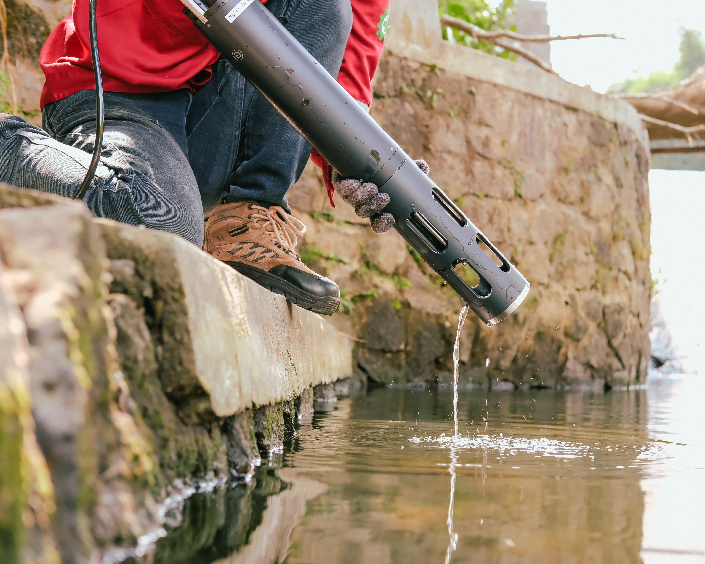
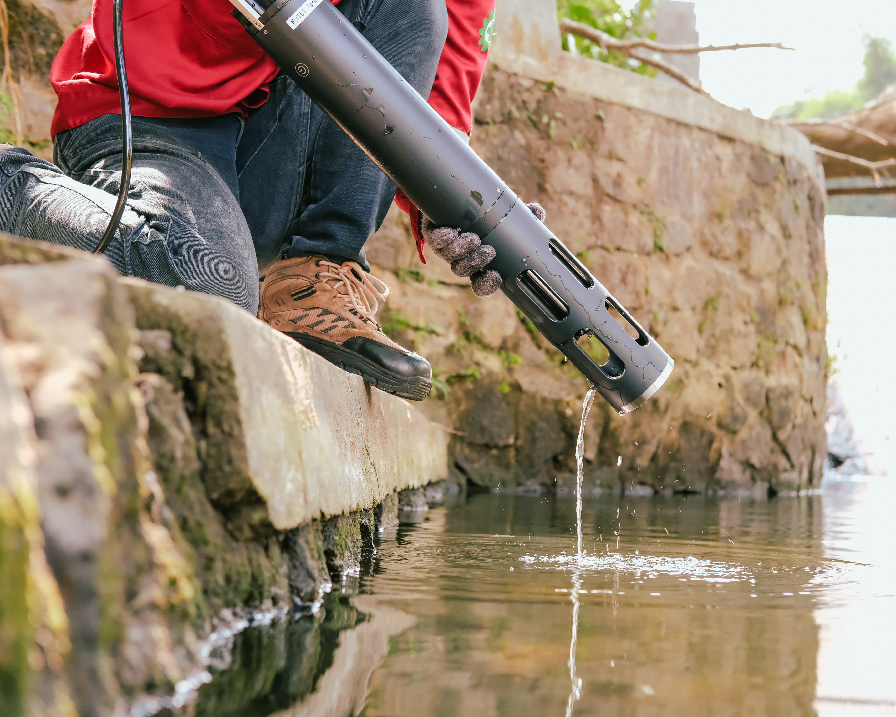

Portofolio
Water Quality Monitoring System
 

Proyek implementasi Water Quality Monitoring System (WQMS) digunakan untuk pemantauan kualitas air secara berkelanjutan. Sistem ini mengukur parameter seperti pH, suhu, DO, COD, BOD, dan TSS secara real-time. Data yang diperoleh membantu pengambilan keputusan yang lebih akurat bagi industri, pemerintah, dan lembaga terkait.
Limbah industri yang dibuang tanpa pengolahan yang tepat dapat mencemari air dengan bahan kimia berbahaya. Kondisi ini berisiko terhadap kesehatan manusia dan hewan air, serta dapat mengganggu keseimbangan biologis ekosistem sungai.
Banyak daerah di Indonesia masih mengalami keterbatasan sistem pemantauan kualitas air yang memadai, sehingga data yang tersedia sering kali tidak akurat atau sulit diakses oleh masyarakat.
Sebagai bentuk kontribusi dalam pemantauan kualitas air, PT Mertani mengimplementasikan Perangkat Pemantauan Kualitas Air (PQMS) di Bantar Gebang, Bekasi. Instalasi ini dilakukan pada Juli 2024 dan bertujuan untuk memantau serta menguji kualitas air limbah yang masuk ke sungai.